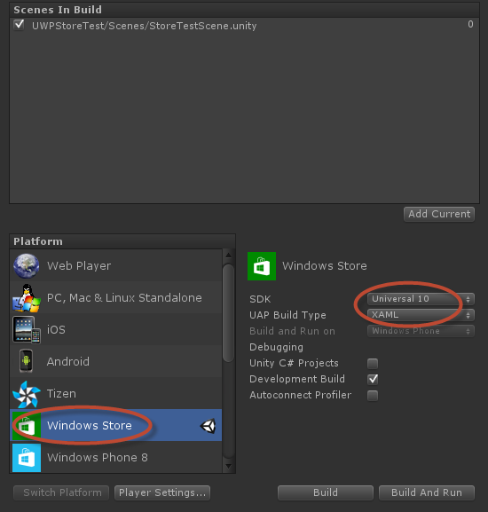

Welcome to Unity Plugins for Windows Store apps and Azure.
Before you can use any of the plugins, you will have to register the Unity AppCallbacks with the plugin. This is required so that Windows APIs that require the Windows UI thread can run on it and then call any status callbacks back on the Unity thread.
You should place the following line just after Window.Current.Activate() in InitializeUnity function in App.xaml.cs
Microsoft.UnityPlugins.Utils.Initialize((action) => AppCallbacks.Instance.InvokeOnAppThread(new AppCallbackItem(() => action()), false));
Note: Windows Store APIs will work only when compiled and run as a Windows Store app. Even though the Unity Stubs are present and allow you to invoke the APIs within the Unity editor, none of the API calls are actually functional and will likely produce and error message or return an error. To actually use the APIs, you must export the project as a Universal Windows 10 XAML project.